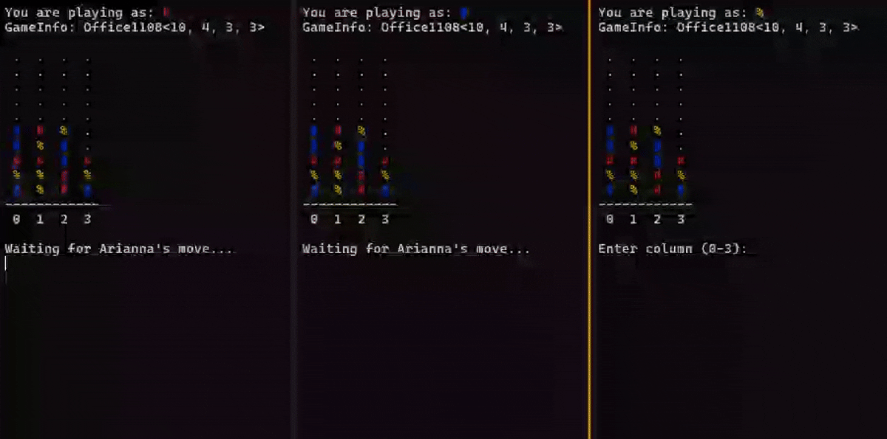
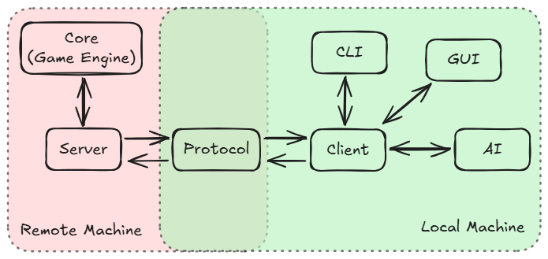
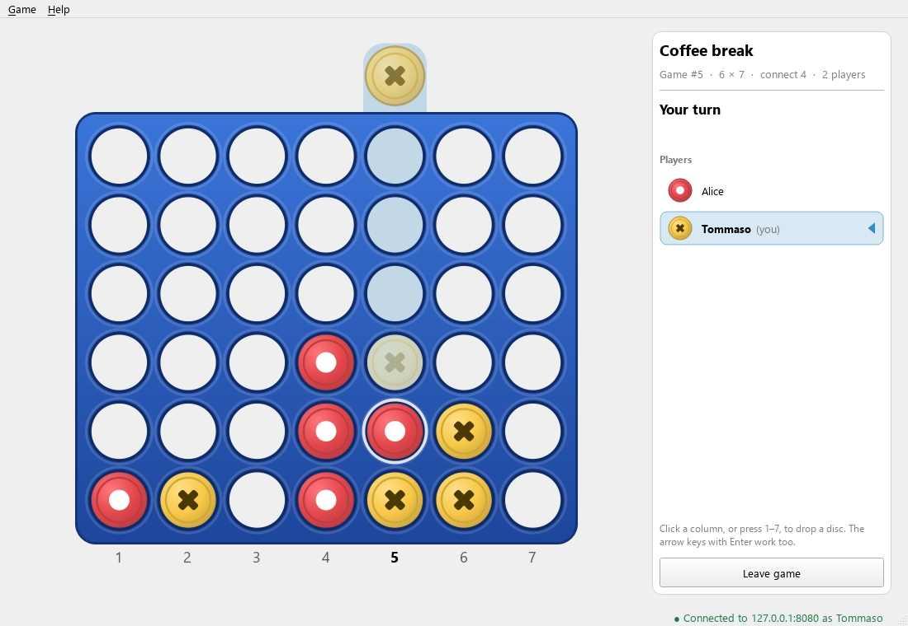

|
ConnectX 3.0
ConnectX Game Suite
|
|
ConnectX 3.0
ConnectX Game Suite
|
Connect X game with client-server architecture enabling local/online multiplayer and AI opponents. Modular design with decoupled game engine, network protocol, CLI/GUI interfaces and a from-scratch AI module (from alpha-beta to neural networks trained by self-play, up to an Arduino).

The project was born during Christmas holidays back in 2017, as a simple implementation of the classic Connect 4 game. This was actually my tentative to practice a bit of C programming language, which I had just started to learn at high school with some basic concepts. At the time of the first implementation, I had no idea about arrays and the program turned out to be an ugly mess of 1400 lines. Luckily, soon after that, I learned about arrays and the code was refactored to be much more readable and maintainable.
Leaving the project aside for a while, in 2023 I had the need to practice about managing larger C/C++ projects and decided to improve once again this repo by cleaning up the code, modularizing it and playing around with proper build systems.
Despite being already functional, I always had the dream of adding networking capabilities to the game, removing the need of having both players on the same machine. So here we are in 2025, with a complete rework of the project, now called ConnectX Game Suite, which includes a proper client-server architecture, enabling local/online multiplayer and AI opponents (the AI module and the graphical client are the latest additions).
ConnectX Game Suite is a (semi-)professional implementation of the classic Connect 4 game built with modern C++ and with a focus on clean architecture. The project demonstrates how to build a networked multiplayer game with properly separated concerns, making each component testable and reusable independently. The implementation uses a client-server model where a central server manages game sessions while multiple clients can connect to play.

The modular design allows for multiple deployment scenarios. Players can compete locally on the same machine, play online across different networks, or challenge AI opponents. The system supports custom board sizes, variable player counts, and different win conditions. Games can be created with names for easy discovery, and automatic matchmaking connects players to available sessions.
Each module serves a specific purpose.
Here's a quick guide to get you started with ConnectX Game Suite.
The project uses CMake (3.16 or newer) and a C++17 compiler; the libraries it needs (spdlog, sockpp, nlohmann/json) are downloaded by CMake itself. To build the project, simply run the following commands in the project root directory:
This will generate the executables (server, CLI and GUI clients, AI tools) in the build/bin directory. What gets built is controlled by a few options (cmake -DNAME=VALUE ..):
| Option | Default | What it does |
|---|---|---|
| BUILD_GUI | ON | the graphical client; it needs Qt 6 (Widgets). If CMake cannot find Qt it prints a warning and skips the GUI: point CMAKE_PREFIX_PATH to a Qt kit (e.g. -DCMAKE_PREFIX_PATH=C:/Qt/6.9.3/mingw_64) or switch it off with -DBUILD_GUI=OFF |
| BUILD_AI | ON | the AI module: connectx-ai (computer player), connectx-arena (tournaments), connectx-train (training) and the pretrained network |
| BUILD_GATEWAY | ON | the web gateway, connectx-gateway: the WebSocket front door that lets web browsers play (it needs BUILD_NETWORK, and offers computer opponents if BUILD_AI is on too) |
| BUILD_TESTS | OFF | the unit and integration tests, then run ctest in the build directory |
| BUILD_CLI, BUILD_NETWORK, BUILD_CORE | ON | the command-line client, the network components (server, client library), the game engine |
To start a server, run the following command in a terminal:
This will start the server on the default port 8080. In another terminal, start a client to connect to the server:
This will launch the CLI interface, that will automatically connect to the server running on localhost:8080 and join an open game or create a new standard game if none is available. Wait for another player to join the game (you can open another terminal and start another client to simulate a second player) and just have fun!
If you prefer windows to a terminal, ./connectx-gui does the same with a graphical interface (details):

A computer player is a client like any other: start it in another terminal and tell it which game to join.
The graphical client does all of this for you: choose the computer (and one of five strength levels) when creating a game in the lobby, or press Play offline against the computer on the first page (./connectx-gui --offline), which even starts a private server on your machine, so no terminal is needed at all (details).
--agent selects the algorithm, from random and greedy through minimax, alphabeta, mcts and the exact solver to the neural networks (nn, nnsearch, az); connectx-ai --list-agents describes them all. The AI guide explains how each of them works, how strong it is (a tournament table) and how to train your own network, and the Arduino guide how to play against a network running on a microcontroller.
Running on a local machine is fine for testing, but if you want to play online with friends, you'll need to host the server on a public machine. You can use any VPS provider or cloud service that allows you to run custom applications. Make sure to open the server port in the firewall settings to allow incoming connections. Once the port is open, start the server on the public machine in daemon mode:
Then, when starting the client, specify the server address:
Replace X.X.X.X with the public IP address of the server and X with the port number you configured.
By default the server listens on every network interface. To accept only clients running on the same machine (a private server for a single player, which is also how the GUI plays offline against the computer) add --bind 127.0.0.1.
A browser cannot open a TCP connection, so a web page cannot connect to the server by itself. The web gateway is the adapter: ./connectx-gateway accepts WebSocket connections and carries each one to the server over a TCP connection of its own, so that a page can do everything the other clients do (lobby, rooms, quick match, the computer). The server is not modified and can keep listening on the machine itself: only the gateway, behind a reverse proxy such as nginx that provides TLS, faces the internet. The gateway's README explains the protocol for those who write a web client, and how to run both programs as services behind nginx.
The game is overall stable, but there are still some known issues/bugs:
The first two affect the CLI only: the graphical client is driven by events and has neither problem.
Scalability is a concern, as the server makes intense use of synchronous/blocking calls via mutexes to ensure thread safety. This is fine for probably handling some dozens of games and few hundreds of concurrent players, but for larger scale deployments, an asynchronous/event-driven architecture would be more appropriate. Load testing and profiling will be performed in the future to identify bottlenecks and optimize performance.
The AI module implements the classic algorithms (minimax, alpha-beta pruning, an exact solver, Monte Carlo tree search) and neural networks up to AlphaZero-style self-play, all written from scratch, together with the workflow to export a network to TensorFlow and TensorFlow Lite and run it on an Arduino. Natural next steps: convolutional networks (they need a GPU to train in reasonable time, which is what the TensorFlow route is for), an opening book for the solver, games with more than two players, and trying the sketch on real hardware.
Contributions are welcome! If you find a bug or have a feature request, please open an issue on GitHub. If you want to contribute code, please fork the repository and create a pull request with your changes.
Have a nice coding day,
Tommaso :panda_face: